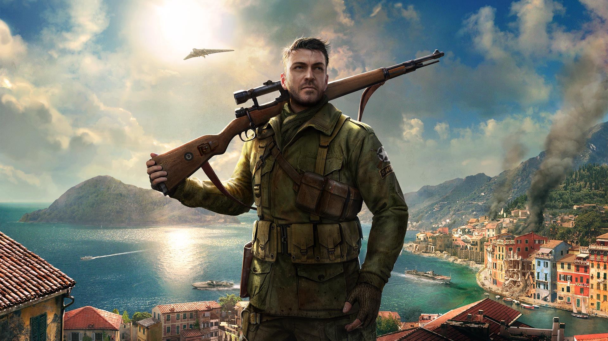

The story
Set in the aftermath of its award-winning predecessor, Sniper Elite 4 continues the series’ World War Two heritage by transporting players across the beautiful Italian peninsula, from sun-drenched Mediterranean coastal towns, to colossal Nazi mega structures, daunting forests and giddying mountain monasteries inspired by Monte Cassino.Covert agent and elite marksman Karl Fairburne must fight alongside the brave men and women of the Italian Resistance to help free their country from the yoke of Fascism, and defeat a terrifying new threat with the potential to halt the Allied fightback in Europe before it’s even begun.If his mission fails, there will be no Operation Overlord, no D-Day landings, and no Victory in Europe